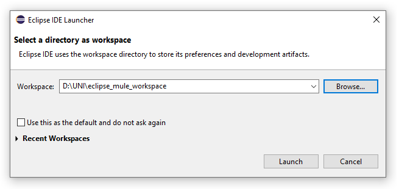
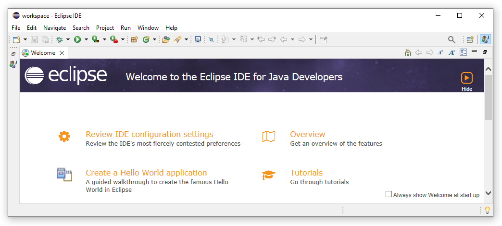
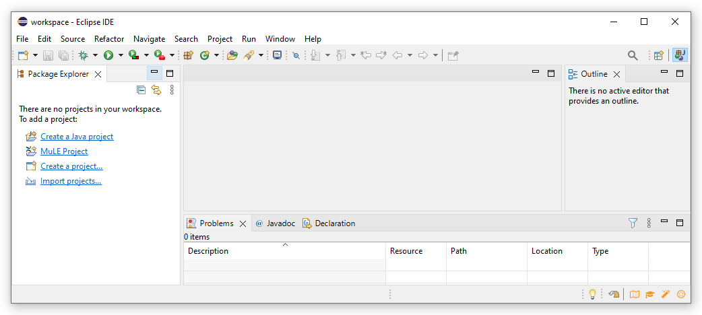
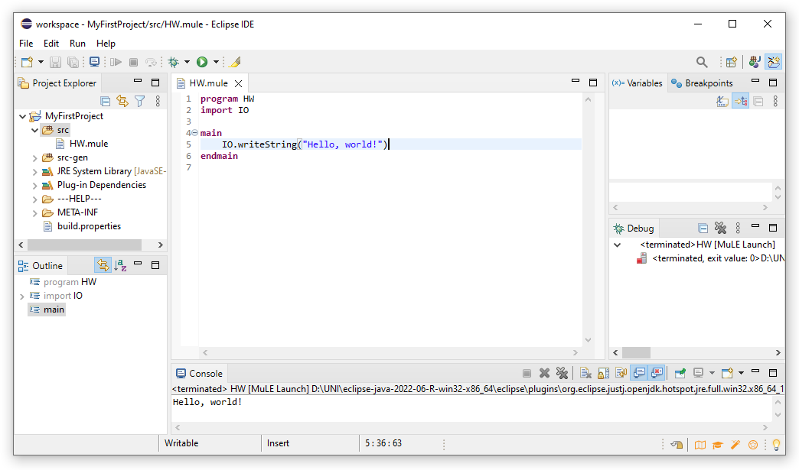

MuLE is powered by Java, which makes it platform independent, however you need to have at least Java 8 running on your machine.
If you are not sure if Java is already installed and which version you have, you can enter the command java -version in you command line interface, e.g. cmd.exe on Windows.
You can get the current version of Java at https://www.oracle.com/java/technologies/downloads/

The tool support for MuLE is provided by the Eclipse integrated development environment.
You can download prepackaged Eclipse from these links:
- Windows: https://drive.google.com/file/d/1_yJkuWU6xMofwrY7m0GZS1QJhtZ82CJ5/view?usp=sharing
- Linux x86_64: https://drive.google.com/file/d/1ffgHGvoS9laHvxzT77syA0_ayIGsFDxX/view?usp=sharing
- macOS AArch64: https://drive.google.com/file/d/1KR4OaqFxzMdSz0jQJizZ8y3JxmJmcrM9/view?usp=sharing
However, if you want to download and configure your own Eclipse, instead of downloading any of the above archives, you need to follow the installation instructions.
You have downloaded an Eclipse archive and extracted it in a folder of your choice.
- Start Eclipse by running the executable (eclipse.exe on Windows)
-
Once Eclipse loads, you will see the following window:

Here you are asked to set a path to you workspace, i.e. a folder where all of your project folders and files will be stored.
Enter a path of your choice and press Launch. -
You will be greeted by the following window:

Simply press the Hide button in the upper right corner and you will get to your workspace. -
We are now in the Java perspective, which look like that:

Since we want to program using MuLE, we have to click on the MuLE Project option in the Package Explorer.
Once we do that, a new window will open prompting us to enter the project name.
Let us enter MyFirstProject as a name and press Finish.
Keep in mind, some names will not be accepted, e.g. you may not use empty spaces within a name or use most special characters.
If you now browse to your workspace folder in your system explorer, you will find your new project folder there.
You may also have noticed, that the main window in the background has changed slightly. -
Creating a MuLE project has automatically forced us into the MuLE Perspective, we can see fewer buttons compared to the Java perspective.
As we can see, the project is empty, we have to create a MuLE file first.
To do this, right click on the src folder in your project and select New → File → Other → MuLE → MuLE File, enter the file name, e.g. HW, and press Finish.
Keep in mind, some names will not be accepted, e.g. you may not use empty spaces within a name or use most special characters.
Alternatively, you can click on File → New → MuLE File and enter the target src folder as well as a name. -
As tradition demands, we will start by writing a Hello, world! program.
To do this, simply type IO.writeString("Hello, world!") somewhere between the keywords main and endmain.
Once you are done typing, save your file and press the green button which looks like a PLAY button.
You should see a Hello, world! output in the console view.

That's it, we have written our first MuLE program!
You can now start with the programming course, everything you need to know will be explained there step-by-step.
A structured overview over specific language constructs is given in the corresponding sections of this website.
Sooner or later you will stare at your code not understanding why it doesn't work, or why it does.
At this point, it would be very helpful, if you could execute your program step-by-step and monitor the state of the variables.
Thankfully, there is a tool called debugger, which is exactly meant to do just that.
In the screenshot below you can see a program in the middle of debugging process.
- To start debugging, you first need to place at leat one breakpoint by double clicking on a line number.
Be aware, that you can not place a breakpoint just anywhere, however statements such as operation calls or assignments should du just fine.
You can manage your breakpoints in the Breakpoints view. - Now that we have a breakpoint, we can start debugging by clicking on the Debug button.
This will execute the program normally until a breakpoint is reached.
At this point the execution is halted and we can inspect our variables in the Variables view. - To execute our program step-by-step we can press the Step over in the debug controls panel to the left of the Debug button.
- Using the debug controls we can also run the program until the next breakpoint is reached, in our example it would be the same breakpoint in the next iteration of the loop.
Or we can terminate the debugging process if we have found out what we need and don't want to fully execute our program.
Follow these steps ONLY if you have chosen not to use one of the prepackaged Eclipse archives.
ATTENTION: the MuLE plugins make changes to the Eclipse user interface. You are advised to use a separate Eclipse installation for MuLE.
- Download an Eclipse package (Eclipse IDE for Java Developers will suffice): https://www.eclipse.org/downloads/packages/
- Extract the archive in the folder of your choice and run the executable.
- Once Eclipse has started, navigate to Help → Install new Software.
- Copy and paste the following address into the Work with field and press enter: https://nikitaduemmel90.github.io/muleupdatesite/
- Select the MuLE plugin
- (Optional) Activate the option Contact all update sites during install to find required software.
This step is required if you encounter an error message during the install process. - Press Next, a new window will open, press Next again.
- Accept the (non-existing) license, press Finish. Press Install Anyway.
- Once the installation is complete, restart Eclipse. MuLE is now installed and can be used.
- Navigate to Help → Check for Updates to update MuLE as well as all other plugins.